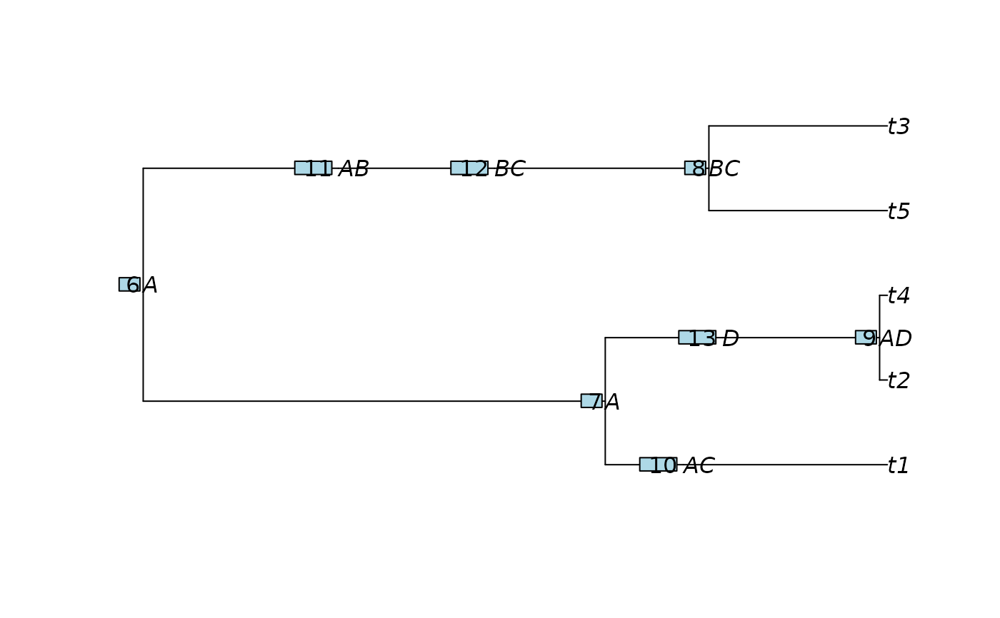

Calculate evolutionary distinctiveness (ED) based on a biogeographical model
calc_ed.RdFor each tip, the function calculates evolutionary distinctiveness (ED), which can be the total ED or in situ ED. See details. By default, it calculates total ED.
Usage
calc_ed(
tree,
ancestral.area = NULL,
current.area = NULL,
type = c("equal.splits", "fair.proportion")
)Arguments
- tree
Phylogenetic tree of class
'phylo'.- ancestral.area
A one-column data frame indicating the area of occurrence of each node (rows). Row names must correspond to node labels in the tree.
- current.area
A character string indicating the focal area. All tips are assumed to be present in this area when computing in situ ED.
- type
Character indicating the type of ED metric to use. One of
"equal.splits"(default) or"fair.proportion".
Details
Total ED (no biogeographical restriction): If neither
ancestral.areanorcurrent.areaare provided, the function calculates ED as originally proposed by Redding & Mooers (2006, 2007).In situ ED (biogeographical restriction): If both
ancestral.areaandcurrent.areaare provided, ED is calculated only along branches where the ancestral area matches the providedcurrent.area. This represents evolutionary distinctiveness accumulated in situ within the specified biogeographical region.
You must provide either both ancestral.area and current.area (for
in situ ED), or neither (for total ED). Providing only one of them will
result in an error.
References
Redding, D. W., & Mooers, A. Ø. (2006). Incorporating evolutionary measures into conservation prioritization. Conservation Biology, 20(6), 1670–1678. https://doi.org/10.1111/j.1523-1739.2006.00555.x
Redding, D. W., & Mooers, A. Ø. (2007). The shape of phylogenetic trees and the context for conservation: a review of macroevolutionary macroecology. Philosophical Transactions of the Royal Society B: Biological Sciences, 362(1478), 849–860. https://doi.org/10.1098/rstb.2006.1977
Examples
# example for calc_ed
# generate simlutated data ----
set.seed(4523)
tree_sim <- ape::rcoal(5)
# Create node area table (only bifurcating nodes)
node_area <- data.frame(
area = c("A", "A", "BC", "AD"),
row.names = paste0("N", 6:9)
)
# create insertion of nodes to simulate for change in area in the branch
# Use ggtree to identify insertion points
gdata <- ggtree::ggtree(tree_sim)$data
#> Warning: `aes_()` was deprecated in ggplot2 3.0.0.
#> ℹ Please use tidy evaluation idioms with `aes()`
#> ℹ The deprecated feature was likely used in the ggtree package.
#> Please report the issue at <https://github.com/YuLab-SMU/ggtree/issues>.
#> Warning: Arguments in `...` must be used.
#> ✖ Problematic arguments:
#> • as.Date = as.Date
#> • yscale_mapping = yscale_mapping
#> • hang = hang
#> ℹ Did you misspell an argument name?
ins_data <- gdata %>% dplyr::filter(node %in% c(3, 9, 8))
#> ! # Invaild edge matrix for <phylo>. A <tbl_df> is returned.
#> ! # Invaild edge matrix for <phylo>. A <tbl_df> is returned.
ins_data <- tibble::add_row(ins_data, ins_data[2, ]) %>% dplyr::arrange(node)
# Define inserted nodes with areas
inserts <- tibble::tibble(
parent = ins_data$parent,
child = ins_data$node,
event_time = c(0.2, 0.5, 0.9, .3),
node_area = c("AC", "AB", "BC", "D")
)
# Insert nodes
result <- insert_nodes(tree_sim, inserts, node_area = node_area)
#> Warning: Arguments in `...` must be used.
#> ✖ Problematic arguments:
#> • as.Date = as.Date
#> • yscale_mapping = yscale_mapping
#> • hang = hang
#> ℹ Did you misspell an argument name?
tree_out <- result$phylo
node_area_out <- result$node_area
# Compute Evolutionary Distinctiveness --------
# ED total (same results as picante::evol.distinct())
ed_total <- calc_ed(
tree = tree_out,
type = "equal.splits")
# ED partial. Account for in situ distinctiveness only
ed_partial_A <- calc_ed(
tree = tree_out,
ancestral.area = node_area_out,
current.area = "A",
type = "equal.splits")
ed_partial_D <- calc_ed(
tree = tree_out,
ancestral.area = node_area_out,
current.area = "D",
type = "equal.splits")
data.frame(
species = names(ed_total),
ed_total,
ed_partial_A,
ed_partial_D
)
#> species ed_total ed_partial_A ed_partial_D
#> t5 t5 1.1821401 0.00000000 0.0000000
#> t3 t3 1.1821401 0.00000000 0.0000000
#> t1 t1 1.3149164 1.31491644 0.0000000
#> t2 t2 0.6674121 0.01990779 0.2214118
#> t4 t4 0.6674121 0.01990779 0.2214118
# tree visualization
tree_viz <- tree_out
tree_viz$node.label <- node_area_out$area
plot(tree_viz, show.node.label = TRUE)
ape::nodelabels(adj = 1.2)
